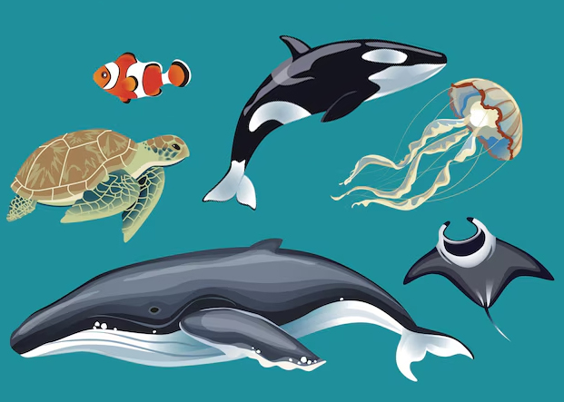

Los animales marinos son aquellos que están adaptados a la vida dentro del mar, en su superficie o en sus orillas. Dado que nuestro planeta está en dos tercios de su superficie cubierto por agua, la vida marina abarca una enorme y diversa cantidad de animales, repartida en los cinco océanos y adaptada a sus hábitats específicos. Entre los animales marinos se hallan los descendientes de los organismos más antiguos conocidos. De hecho, hasta donde sabemos, la vida tuvo sus inicios en los océanos primitivos de la era geológica Precámbrica, hace miles de millones de años.
Haz clic en las diferentes zonas de la imagen para conocer más sobre la vida marina.
Las ballenas son mamíferos marinos fascinantes que pertenecen al orden Cetacea y se dividen principalmente en dos grupos: las ballenas dentadas (Odontoceti), como la orca, y las ballenas barbadas (Mysticeti), como la ballena azul.
Las orcas (también conocidas como ballenas asesinas, aunque no son realmente ballenas) son uno de los mamíferos marinos más fascinantes y poderosos del planeta. Pertenecen al grupo de las ballenas dentadas (Odontoceti) y son conocidas por su inteligencia, su organización social y su destreza como cazadoras. Las orcas son muy adaptables y se encuentran en todos los océanos del mundo, desde las frías aguas del Ártico hasta las más templadas y cálidas del sur.